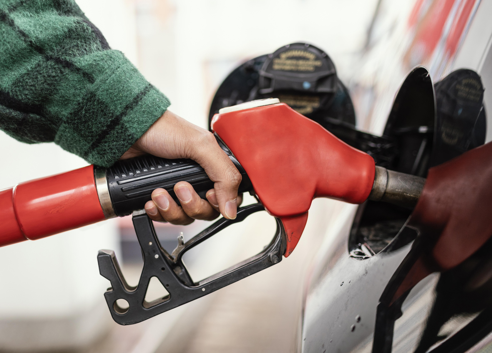

Cars of the Future: Maximizing Fuel Efficiency and Exploring Alternative Fuels

Learn how to save money and reduce your environmental footprint with our tips for improving fuel efficiency and exploring alternative fuels.
Fuel efficiency and alternative fuels are two important aspects of environmentally-friendly driving. As the cost of gas continues to rise, it's more important than ever to optimize your vehicle's fuel economy to save money at the pump. Moreover, the environmental impact of transportation is a pressing issue, and exploring alternative fuels can help reduce the carbon footprint of our vehicles.
In this article, we'll explore some tips for improving fuel efficiency and the various alternative fuels that are available.
Improving Fuel Efficiency
There are several simple steps you can take to improve your vehicle's fuel efficiency. Here are some tips to help you get started:
Drive more smoothly: Aggressive driving habits such as rapid acceleration, hard braking, and speeding can reduce fuel efficiency by up to 33%. By driving more smoothly, you can save money on gas and reduce wear and tear on your vehicle.
Keep your tires properly inflated: Under-inflated tires can decrease fuel efficiency by up to 3%. Make sure to check your tire pressure regularly to keep your tires properly inflated.
Remove excess weight: Extra weight in your vehicle, such as luggage or sports equipment, can reduce fuel efficiency by up to 2%. Remove any unnecessary items from your vehicle to help improve fuel economy.
Use the right oil: Using the manufacturer-recommended grade of motor oil can improve fuel efficiency by up to 2%. Check your owner's manual to ensure you're using the correct type of oil for your vehicle.
Keep up with regular maintenance: Keeping up with regular vehicle maintenance, such as oil changes and air filter replacements, can help improve fuel efficiency and keep your vehicle running smoothly.
Alternative Fuels
In addition to improving fuel efficiency, exploring alternative fuels can also help reduce the environmental impact of transportation. Here are some alternative fuels to consider:
Electric Vehicles (EVs): EVs are becoming increasingly popular, and for good reason. They produce zero emissions and can be charged at home or at public charging stations. However, they can be expensive to purchase and require a network of charging stations to be practical for longer trips.
Hybrid Vehicles: Hybrid vehicles combine an internal combustion engine with an electric motor, allowing them to achieve higher fuel efficiency than traditional vehicles. They are typically less expensive than EVs and don't require charging infrastructure, but they still produce some emissions.
Biofuels: Biofuels are made from renewable sources such as corn, soybeans, and algae. They produce fewer emissions than traditional gasoline and diesel fuels and can be used in traditional combustion engines. However, the production of biofuels can also have environmental impacts, and there are concerns about the availability of land for growing biofuel crops.
Hydrogen Fuel Cell Vehicles: Hydrogen fuel cell vehicles use hydrogen as a fuel source and produce water as their only emission. However, they are expensive and there are currently limited fueling stations available.
Improving fuel efficiency and exploring alternative fuels are two important steps we can take to reduce our environmental impact and save money on gas. By following these tips and exploring the various alternative fuels available, we can all do our part to create a more sustainable future.